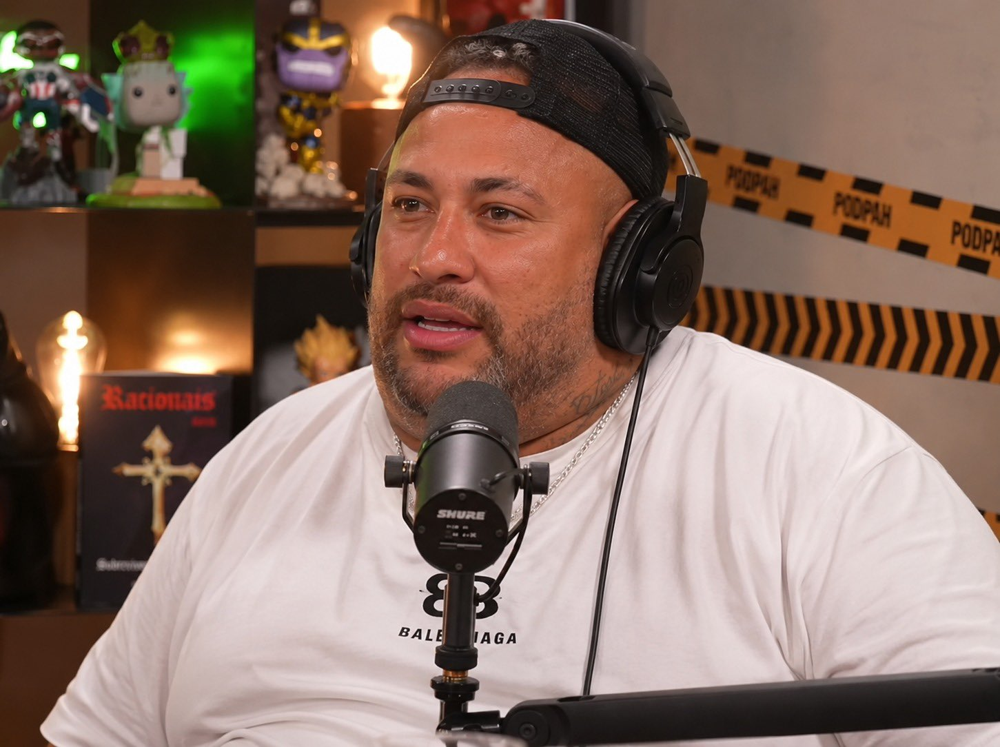

Neymar trouxe a taça do hexa pro Brasil, mas comeu ela com farofa
Por: Neymar Professional Hater
Notoriamente conhecido por ser muito egoísta, o eterno menino Neymar da Silva Santos Júnior se recusou a dividir o troféu com seus colegas de time e acabou almoçando a taça da Copa do mundo FIFA com farofa na última terça-feira.